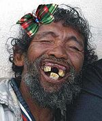
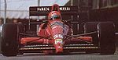

De: La Frikipedia, la enciclopedia extremadamente seria.
De: La Frikipedia, la enciclopedia extremadamente seria. De: La Frikipedia, la enciclopedia extremadamente seria.
Si te quieres inscribir para las carreras en alguno de esos equipos, pulsa aquí
| De la serie deportes para todos: | |||
| FrikiCar Series | |||
| |||
| Número de practicantes | Todo dios que se apunte. | ||
| ¿Deporte Olímpico? | No por ahora. | ||
| Campeonatos | FrikiCar Series | ||
| ¿Donde se practica? | Ciudad Frikipedia, etc. | ||
| ¿Control anti-dopping? | No pero un admin te puede banear. | ||
| Riesgo de muerte | No, pero si riesgo de esquince de colodrillo por pasar mucho tiempo en el ordenador. | ||
| Árbitro | Alguien que quiera ponerse de director de carrera. | ||
| Hinchas | Toda la Frikipedia. | ||
«Tengo que correr aquí!»
~ Cualquiera al ver esto
«Yo también! Yo también»
~ Cualquiera al ver lo de arriba
«Y está Danica?»
~ Un salidillo decepcionado
La FrikiCar es la competición definitiva automovilística, en la que compiten los mejores pilotos de La Frikipedia y demás webs neutrales (Inciclopedia), enemigas (Kiwipedia), etc... evidentemente nosotros siempre ganamos porque hacemos trampas somos mejores (y es debido a que los Inciclopédicos usan un coche copión y los Kiwipedistas respetan los límites de velocidad.
| Piloto/s | Coche | Descripción |
|---|---|---|
 Sakimaki López Sakimaki López |
Chaparral 2J | El primer piloto del equipo, evidentemente si vemos su coche nos damos cuenta de porque lo es, si eres de La Innombreble Team deberías tener cuidado que no te rompa tu Rolls Royce. |
 Mono Joac o Speche the manghedri Mono Joac o Speche the manghedri |
Chata XR7 | Pistero amateur con ansias de victoria. Todavía no tiene carnet de conducir pero consiguió permiso del Gobierno de Ctulhu para representarlos en las olímpiadas de primavera. Tiene 4 poles, 5 chatas rotas y un CD rayado de Luis Miguel. |
| Piloto/s | Coche | Descripción |
|---|---|---|
|  Juan Palote | Ferrari 330 P4 | Un tipo que piensa que un coche de los '60 que no ganaba va a ganar ahora, por algo no está todavía en nuestro equipo y sigue sin querer venir, y eso que le ofrcimos un vaso de leche con galletas y un bocata de jamón diario. |
| Perry el Ornitorrinco | Penske PC23 | Perry también decide competir pero el equipo inciclopédico tiene favoritismo por Juan Palote, así que no tiene forma de poder ganarnos, pero siempre podemos ficharlo para el año que viene, ¿no? |
 Tío1.jpg Tío1.jpg |
Lotus T128 | El líder supremo del equipo |
| Piloto/s | Coche | Descripción |
|---|---|---|
| Roger Smith | Vravjam BT20 | Un piloto al estilo Borrachönen por su afición a irse de putas, el alcohol, abandonar y romper motores, aún así es lo mejor que la Kiwipedia ha encontrado para correr, y no, a este no le ofrecemos ningún puesto en Frikipedia Team. |
 El admin loco de la kiwipedia El admin loco de la kiwipedia |
Herbie | Hay que tener cuidado con este tipo porque en cuaquier momento le puede dar un siroco y llevarte por delante a tí y tu equipo, pero tranquilo porque su coche por muy explosivo que sea no te alcanzará. |
| Jamesmayslx | Marcos Mantis SC (super cabron) | El no es el capitan pisa huevos que conocen ,este tiene este coche super deportivo que tiene un nitro a base de pedos. |
| piloto/s | Coche | Descripción |
|---|---|---|
| El gato de desmotivaciones |  Leyton House CG901 Leyton House CG901 |
Digamos que es la combinación más explosiva de todos los tiempos (porque le explota el motor), son nuevos esta temporada y prometen dar espectáculo del bueno o lo que es lo mismo espectáculo de fuegos artificiales cada vez que explote. |
 MyLittlePonyComic2 MyLittlePonyComic2 |
Mitsubishi starion version |
Este brony se canso de |
| piloto/s | Coche | Descripción |
|---|---|---|
| Fuckencio Martínez |  Life L190 | Bueno, pues a este le vieron la cara de inocente y le djeron que esto era un Fewari, ¡Cuánto Cabrón! |
| Trolldad |  Brabham BT46B Brabham BT46B |
Como te puedes imaginar su coche trollea a todo dios, y no, no es una ironía ni nada, si no te lo crees, mira aquí y aquí para ver más fotos del aparato ese. Por suerte lo echarán a patadas en la 1º carrera, la que puede ganar, ojo con él. |
| Frikencio | Chevrolet Monte Carlo Nascar | Como no su cara de Fuck Yea lo delata, pero tranquilo, solo corre una carrera al año para poder ponerse así siempre, o sea que no es precisamente regular. |
| piloto/s | Coche | Descripción |
|---|---|---|
 Hube01 Hube01 |
Un McLata-Mercedes | Un joven |
| piloto |
Coche | Descripción |
|---|---|---|
| AztroCat01 | AC-1 (su propia carcacha) | Este |
| piloto |
Coche | Descripción |
|---|---|---|
| Iván Geimer | Life (Dice que ganará...) | Es un |
| Posición en el calendario | Circuito | Situación | Descripción |
|---|---|---|---|
| 1º |  Ciudad Frikipedia Superspeedway Ciudad Frikipedia Superspeedway |
Polígono industrial de Ciudad Frikipedia | El óvalo más rápido de la FrikiCar, la emoción se respira en el ambiente desde la primera curva hasta la tercera y última en la que los pilotos acaban vomitando, excepto el admin de la Kiwipedia, debido a que él sólo es un GIF. El récord de victorias aquí lo tiene Roger Smith, con nada más y nada menos que siete, y por la cuenta que le trae ya que la copa del ganador es de 10l y se entregan dos botellas de la babida que el ganador quiera (incluyendo lo que quiera que sea que toma Roger |
| 2º | Autódromo Nacional Lamborghini de Ciudad Frikipedia | Parque del retiro de Ciudad Frikipedia | Un circuito técnico, mas largo y peligroso que el circuito de la Isla de Man en el que Roger siempre se lleva por delante a varios en la primera curva debido al glamour (glamour=tías=alcohol=hostión/Kimi 2). |
| 3º | El Circuito de Montecarlo | Las calles de Mónaco | La carrera del Zespree Green-Kiwipedia Racing Engineering Red Bull-Team, debido a que siempre respetan los límites de velocidad y aquí si vas a más de 50 puedes tener un accidente como el desdichado de aquí al lado. |
| 4º | El Circuito del cielo | El cielo, la casa del jefe, encima de las nubes, bueno, ya lo interpretas ¿no? | La verdad es que este circuito lo puse aquí para provocarte más de una jaqueca, bueno aquí lo que hacen los pilotos de arriba es mirar desde un helicóptero, y cada uno apuesta por Magic Senna, Marco Simoncelli, Jochen Rindt, etc. |
| 5º | Ciudad Frikipedia International Speedway | Ciudad Frikipedia (centro) | El circuito que La Frikipedia Team domina siempre de cabo a rabo en sus dos complicadísimas curvas, este es el mejor para los habitantes de Ciudad Frikipedia porque como se ve en la afoto, ves las hostias que hay en el otro lado del óvalo. |
| 6º |  Circuito Urbano de Ciudad Frikipedia Circuito Urbano de Ciudad Frikipedia |
Ciudad Frikipedia (casino) | El glamour en estado puro, a su lado Mónaco parece Villarebuzno y Indianápolis parece un circuito de tierra, el gran dominador de este circuito es Krusher, actualmente retirado, pero ya volverá... |
| 7º | Circuito Luigi | La capital del Reino Champiñón | Sin duda el circuito en el que el afecto de la afición pega más duro, con un ambiente acogedor y varias filas de cubos sorpresa, siempre dá que hablar, actualmente se le colocó una chicane allí en la última curva, la del banking, reduciendo la velocidad, como no, la culpa de ello la tiene la [ma]FIA. |
| 8º | La carretera Troll | Trollandia | Leelo como la canción de Spidercerdo: Ten cuidado, es la carretera Troll, te trollea en cualquier momento, hace lo que una carretera Troll puede hacer, es una carretera, es un Troll, es |
Autor(es):